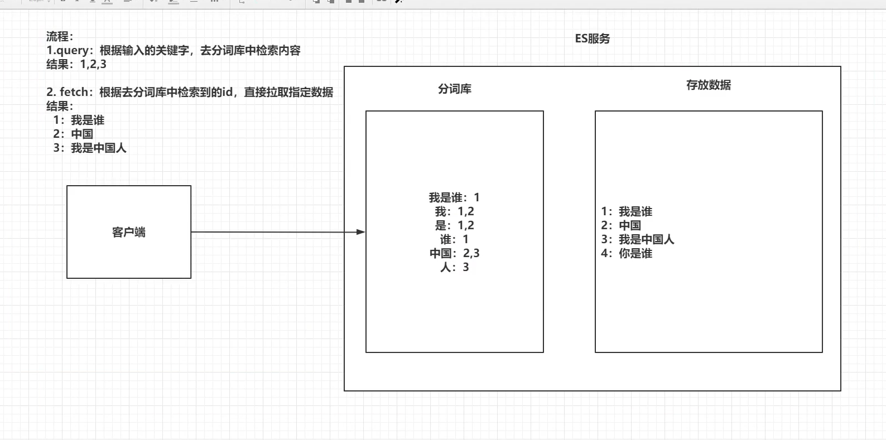
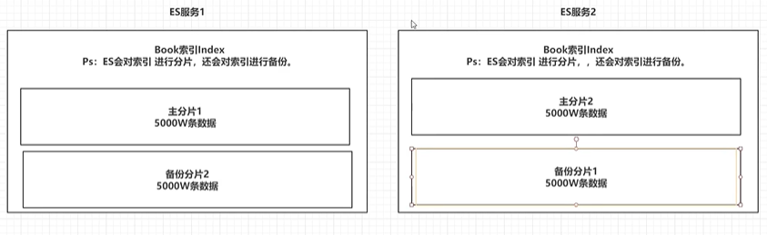
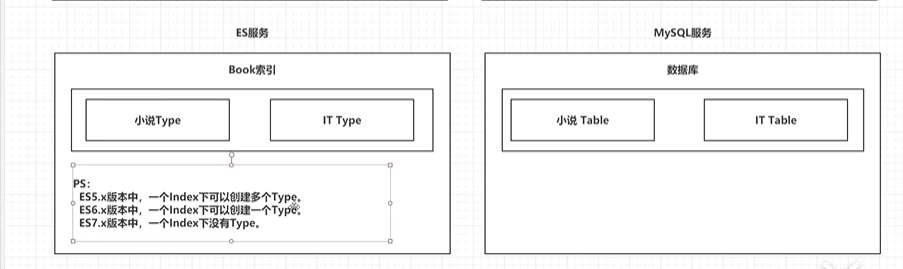
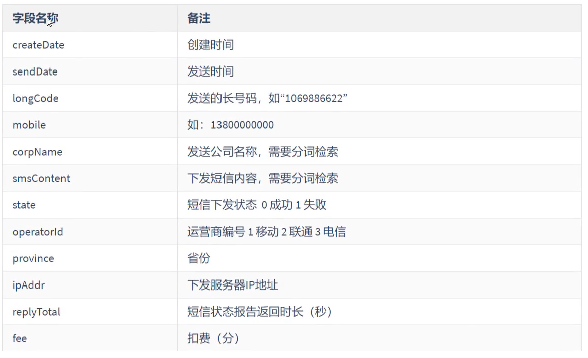

ES简介
ES是使用java 语言并且基于lucence编写的搜索引擎框架，他提供了分布式的全文搜索功能，提供了一个统一的基于restful风格的web 接口。
lucence:一个搜索引擎底层
分布式：突出ES的横向扩展能力
全文检索：将一段词语进行分词，并将分出的词语统一的放在一个分词库中，再搜索时，根据关键字取分词库中检索，找到匹配的内容（倒排索引）。
restful风格的web 接口：只要发送一个http请求，并且根据请求方式的不同，携带参数的不同，执行相应的功能。
应用广泛：WIKI, github,Gold man
ES的由来
1 | 许多年前，一个刚结婚的名叫 Shay Banon 的失业开发者，跟着他的妻子去了伦敦，他的妻子在那里学习厨师。 在寻找一个赚钱的工作的时候，为了给他的妻子做一个食谱搜索引擎，他开始使用 Lucene 的一个早期版本。 |
ES和solr
1.solr 查询死数据，速度比es快。但是数据如果是改变的，solr查询速度会降低很多，ES的查询速度没有明显的改变
2.solr搭建集群 依赖ZK，ES本身就支持集群搭建
3.最开始solr 的社区很火爆，针对国内文档 少，ES出现后，国内社区火爆程度 上升，，ES的文档非常健全
4.ES对云计算和大数据支持很好
倒排索引

1.将存放的数据以一定的方式进行分词，并将分词的内容存放到一个单独的分词库中。
2.当用户取查询数据时，会将用户的查询关键字进行分词，然后去分词库中匹配内容，最终得到数据的id标识
3.根据id标识去存放数据的位置拉去指定数据
安装
elasticsearch 安装
http://hub.daocloud.io/ docker 镜像工厂地址
1 | version: "3.1" |
或者本地下载
2.2
https://github.com/medcl/elasticsearch-analysis-ik/archive/v6.8.10.zip
1 | 官方给的安装的办法 |
本地自己安装
1 | https://github.com/medcl/elasticsearch-analysis-ik/archive/v6.8.10.zip |
kibana 主要用到 Dev Tools 和 Management
1 | POST _analyze |
ES的基本操作
es的结构
索引indx，分片，备份
1 | ES服务中会创建多个索引 |

类型type
1 | 一个索引下可以创建多个类型 |

文档document
1 | 一个类型下可以有多个文档，这个文档就相当于mysql表中的多行数据 |

3.1.4 属性field
1 | 一个文档中可以包含多个属性，类似于mysql 表中的一行数据有多个列 |

操作ES的restful语法
1 | GET请求： |
索引的操作
创建一个索引
1 | #创建一个索引 |
查看一个索引
1 | 1.management |
删除 索引
1 | 1.management |
ES中Field可以指定的类型
https://www.elastic.co/guide/en/elasticsearch/reference/6.8/mapping-types.html 官方 文档
1 | 字符串类型: |
创建索引并指定数据结构
1 | #创建索引，指定数据类型 |
文档操作
1 | 文档在ES服务中的唯一标识， _indx ,_type,_id 三个内容为组合，锁定一个文档，操作时添加还时修改操作， |
新建文档
1 | 自动生成id |
修改文档
1.覆盖式修改
1 | #添加文档,手动指定id |
2.使用doc修改方式
1 | #修改文档，使用doc 方式 |
删除文档
1 | #根据id删除文档 |
Java 操作ElasticSearch
Java 连接ES
1 | 创建maven工程 |
创建client链接
1 | package com.utils; |
创建索引
1 | package com.test; |
检查索引是否存在，删除索引
检查索引存在
1 | package com.test; |
删除索引
1 | package com.test; |
Java操作文档
添加文档操作
1 | public class Demo3 { |
修改文档
1 | public class Demo3 { |
删除文档
1 |
|
java批量操作文档
批量操作 新增
1 |
|
批量删除
1 | public void bulkDelete() throws Exception{ |
ES 练习
1 | 索引：sms-logs-index |

1 | public class Demo4 { |
ElasticSearch的各种查询
term 和terms 查询
term 查询
1 | term 查询是代表完全匹配，搜索之前不会对你搜索的关键字进行分词，直接拿 关键字 去文档分词库中匹配内容 |
1 | #term查询 |
1 | public class TermSearch { |
查询
1 | terms 和 term 查询的机制一样，搜索之前不会对你搜索的关键字进行分词，直接拿 关键字 去文档分词库中匹配内容 |
1 | #terms 查询 |
1 | public class TermSearch { |
match
1 | match 查询属于高级查询，会根据你查询字段的类型不一样，采用不同的查询方式 |
math_all
1 | 查询全部内容，不指定查询条件 |
1 | #match_all 查询 |
1 | public class MatchSearch { |
match 查询
指定一个field 作为查询条件
1 | #match 查询 |
1 | public class MatchSearch { |
布尔match 查询
1 | 基于一个field 匹配的内容，按照 and 或者or的方式连接 |
1 | #布尔match查询 |
1 |
|
multi_match
1 | match 针对一个field 做检索，multi_math 针对多个field 进行检索，多个field对应一个文本。 |
1 | #multi_math 查询 |
1 | public void multiMatchSearch() throws IOException { |
其他查询
id 查询
1 | #id 查询 |
1 | public class IdGetSearch { |
ids查询
1 | 根据多个id 查询,类似 mysql 中的 where in (id1,id2...) |
1 | #ids 查询 |
1 | public void findByIds() throws IOException { |
prefix 查询
前缀查询，可以通过一个关键字去指定一个field 的前缀，从而查询到指定文档
1 | #prefix 查询 |
1 | #match 查询 在这里是什么都查不到的 和上边的prefix 做比较 |
1 | public void findByPrefix() throws IOException { |
fuzzy 查询
1 | 模糊查询，我们可以输入一个字符的大概，ES 可以根据输入的大概去匹配内容。查询结果不稳定 |
1 | #fuzzy 查询 |
1 | public void findByFuzzy() throws IOException { |
wildcard 查询
1 | 通配查询，同mysql中的like 是一样的，可以在查询时，在字符串中指定通配符*和占位符？ |
1 | #wildcard 查询 |
1 | public void findByWildCard() throws IOException { |
rang 查询
范围查询，只针对数值类型，对一个field 进行大于或者小于的范围指定
1 | #rang 查询 |
1 | public void findByRang() throws IOException { |
regexp 查询
1 | 正则查询，通过你编写的正则表达式去匹配内容 |
1 | #regexp 查询 |
1 | public void findByRegexp() throws IOException { |
深分页 scrol l
1 | ES 对from +size时又限制的，from +size 之和 不能大于1W,超过后 效率会十分低下 |
1 | #scroll 查询,返回第一页数据，并将文档id信息存放在ES上下文中，并指定生存时间 |
1 | public class ScrollSearch { |
delete-by-query
1 | 根据term,match 等查询方式去删除大量索引 |
1 | #Delet-by-query 删除 |
1 | public void deleteByQuery() throws IOException { |
复合查询
1 | 复合过滤器，将你的多个查询条件 以一定的逻辑组合在一起， |
1 | #省是 晋城 或者北京 |
1 | public void boolSearch() throws IOException { |
boosting 查询
1 | boosting 查询可以帮助我们去影响查询后的score |
1 | #boosting 查询 |
1 | public void boostSearch() throws IOException { |
filter 查询
query 查询：根据你的查询条件，去计算文档的匹配度得到一个分数，并根据分数排序，不会做缓存的。
filter 查询：根据查询条件去查询文档，不去计算分数，而且filter会对经常被过滤的数据进行缓存。
1 | #filter 查询 |
1 | public void filter() throws IOException { |
高亮查询
1 | 高亮查询就是用户输入的关键字，以一定特殊样式展示给用户，让用户知道为什么这个结果被检索出来 |
1 | #highlight 高亮查询 |
1 | public void highLightQuery() throws IOException { |
聚合查询
1 | ES的聚合查询和mysql 的聚合查询类似，ES的聚合查询相比mysql 要强大得多。ES提供的统计数据的方式多种多样。 |
1 | #ES 聚合查询的RSTFul 语法 |
去重计数聚合查询
1 | 去重计数，cardinality 先将返回的文档中的一个指定的field进行去重，统计一共有多少条 |
1 | # 去重计数 查询 province |
1 | public void aggCardinalityC() throws IOException { |
范围统计
1 | 统计一定范围内出现的文档个数，比如，针对某一个field 的值再0~100,100~200,200~300 之间文档出现的个数分别是多少 |
1 | #针对数值方式的范围统计 from 带等于效果 ，to 不带等于效果 |
1 | public void aggRang() throws IOException { |
统计聚合
1 | 他可以帮你查询指定field 的最大值，最小值，平均值，平方和... |
1 | #统计聚合查询 extended_stats |
1 | // java实现 |
其他聚合查询 查看官方文档
6.10 地图经纬度搜索
1 | #创建一个经纬度索引,指定一个 name ,一个location |
ES 的地图检索方式
1 | geo_distance :直线距离检索方式 |
基于RESTFul 实现地图检索
geo_distance
1 | #geo_distance |
1 | #geo_bounding_box |
1 | #geo_polygon |
Java 实现 geo_polygon
1 | public class GeoDemo { |